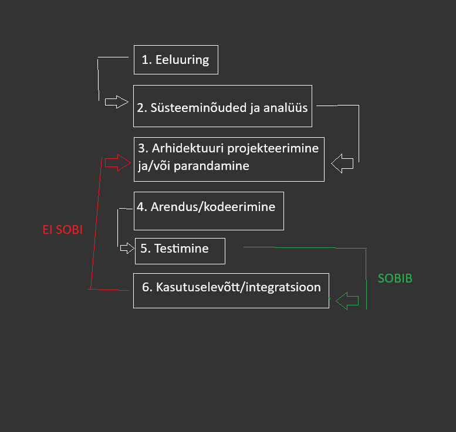

Iteratiivne arendusmudel on SDLC meetod, mille eesmärk on lahendada probleem mille tekitab
tavaline jäikmudel. Jäikmudeli (nagu Waterfall) rakendamisel ei saa muudatusi teha arenduse teostamise ajal.
Iteratiivsed arendusmudelid aga lubavad seda teha iga iteratsiooni vahel.
Iteratiivne arendusmudel on ise ka tegelikult kombinatsioon Iteratiivsest endast ja Inkrementaalmudelist, seda seetõttu, et ühe Iiteratsiooni ajal saab kas olemasolevat struktuuri
muuta (uus iteratsioon vanast) või lisada sellele midagi juurde (uus inkrement vanale).
- Iteratiivne arendusmudel sobib näiteks juhul kui klient või lõppkasutaja vajab mõne funktsiooni teistsugust toimimist või midagi uut juurde.
Näide: On olemas MMORPG kus mängija saab tappa koletisi aga mängijad soovivad ka teisi mängijaid tappa. Arendusmeeskond võtab kuulda, ning arendab juurde meetodid ja funktsioonid
koos muude multimeediavaradega(asset) selle mängijale võimalikuks muutmiseks.
Tulemuseks on see, et avatakse 1v1 areen.
- Arendusmudel sobib ka sellistel juhtudel kus tingimused arenduseks on üheselt määratud ja kõigile meeskonnaliikmetele selged ja üheselt mõistetavad.
- Iteratiivne arendusmudel sobib ka olukordades, kus on turu ja/või konkurentsisurve mingis tootekategoorias. Võib olla kas siis uusarendus lastakse välja osalise funktsionaalsusega
või arendatakse vanale olemasolevale projektile uus osa juurde, samuti osalise funktsionaalsusega.
- Saab kasutada arendusmudelit ka siis, kui projekt rakendab uudset metoodikat või tehnoloogiat mingisuguse lahenduse arendamiseks, ning mille käigus meeskonnaliikmed paralleelselt ka õpivad
uut tööriista/metoodikat tundma.
- Või siis saab kasutada kui projekti eesmärk ajas muutub. Projekt algab ühe eesmärgiga, kuid kasutajatestimine näitab hoopis mõne kõrvalise funktsionaalsuse kasulikumat olektud
või kasutatakse toodet eeldatust täiesti teistmoodi. Sellisel juhul saab arendusmeeskond suunata projekti ümber kasutajate poolt ettenäidatud käitlemise suunas(arendus sihitakse sellele kuidas kasutaja kasutab mitte kuidas arendajad seda ette nägid).

| Tugevused | puudujäägid |
|
Paindlikus mis tagab kiired tulemused. Iteratiivses arenduses saab jaotada kliendi poolt tulnud probleemi või nõude mitmeks väiksemaks osaks, ning need omakorda üksikuteks funktsioonideks. See aitab valmis saada mingisuguse versiooni tootest üsna kiiresti. Olenevalt projektist isegi tundidega või mõne päevaga. Selline tükeldamine lubab arendusmeeskonnal endale parajad probleemid ette seada. |
Projekti edasises arendusjärgus või hilises etapis võivad muudatused (olenevalt selle suurusest ja kontekstist) muutuda kulukaks. Näiteks leitakse üles struktuuris fundamentaalne viga, ning see algne arendustöö on nüüd mitme erineva teenuse või funktsioonikihi all. Muudatused siin tähendavad muudatusi ka kõikides teistes süsteemides mis sellele tuginevad. |
|
Lihtne omaksvõtt ning kliendi rahulolu. Tänu pidevatele uuendustele on iteratiivne arendus arendajaile mugav lubades võtta poolepealt juurde uusi nõudeid või soove juurde kliendilt, tagades kliendile sobivama toote. Iteratiivses mudelis leitakse ka vead suhteliselt ruttu üles, ning nende parandamine tõhustab toote rakendamist ja omaksvõttu ka kasutajaile. Vigadeparandus ise toimib ka jooksvalt. |
Kõrgem surve, et saada projektile kasutajaid, kes peavad siis toote kohta arendajatele tagasisidet andma. Kosemudelis saab kasutaja toote kätte alles arenduse lõpus, pärast mida muudatusi sisse viia ei ole võimalik. Kuna iteratiivses ei ole 100% nõudeid arendustee alguses määratud, saadakse täiendavaid nõudeid lõppkasutajatelt arenduse ajal. |
|
Lihtne versioonihaldus. Iteratiivses arenduses on põhimõtteliselt iga uus väljalase uus versioon mis aitab ära hoida katkise süsteemi leviku. Näiteks lastakse välja FPS mängus patch mis rikub ära kasutaja hüppamisfüüsika(on lag), arendusmeeskond saab reageerida sellele kiirelt keerates väljalaske tagasi vanale versioonile, parandab vead, ning siis laseb juba parandatud patchi uuesti välja. |
Eripärade ja omaduste kasutajani jõudmine. Tihtipeale peavad kasutajad uusi funktsioone arendusmeeskonnalt ise küsima või ootama kuni arendusjärk selle funktsioonini mis neil vaja on, jõuab. Uute versioonide puhul peavad kasutajad harjuma ka uute kasutajaliideste eripäradega, või koguni täielikult uue kasutajaliidesega. Uuega harjumine võtab aega ja tahtmist. |
|
Sobib organisatsioonidele mis rakendavad erinevaid agiilsei arendus praktikaid. Ta toimib väga hästi väiksemates agiilsetes rühmades, kus vastutus on jaotatav, meeskonnaliikmete vahel, ning mis võimaldab iteratsiooni läbida suhteliselt kergelt ja kiirelt. |
-- |